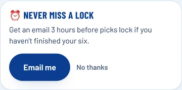
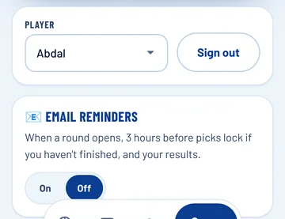
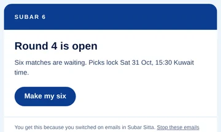
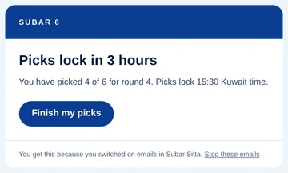
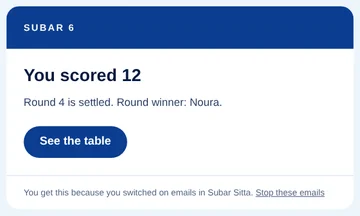

<title>Subar Sitta Review 25 Oct</title>
<link rel="preconnect" href="https://fonts.googleapis.com">
<link rel="preconnect" href="https://fonts.gstatic.com" crossorigin>
<link rel="stylesheet" href="https://fonts.googleapis.com/css2?family=Anton&family=Barlow+Condensed:wght@700&family=Barlow:wght@400;500;600;700&display=swap">
<style>
/* Layout: one phone-width column, matchday-card styling from the SUBAR 6 system */
:root{
  --bg:#EEF5FB;--card:#FFFFFF;--ink:#061A40;--ink-2:#2D4167;--ink-3:#536583;--royal:#0B3D91;--cobalt:#2563EB;--pale:#DEEFF7;--ivory:#FBF6EE;--rule:#D3E2F1;
  --ok:#0B6B4F;--ok-bg:#DDF3EA;--wait:#8A4B00;--wait-bg:#FCEFD9;--on-royal:#FBF6EE;--on-royal-2:#BCD3F2;
  --display:"Anton","Impact","Arial Narrow",sans-serif;--label:"Barlow Condensed","Arial Narrow",sans-serif;--body:"Barlow",system-ui,-apple-system,"Segoe UI",sans-serif;
}
@media (prefers-color-scheme:dark){:root:not([data-theme="light"]){
  --bg:#050E24;--card:#0C2050;--ink:#EEF5FB;--ink-2:#BCCDE8;--ink-3:#93A8CB;--royal:#0E46A8;--cobalt:#8CBBFF;--pale:#13306B;--rule:#1D3A75;
  --ok:#7BE0B8;--ok-bg:#0F3A33;--wait:#FFC978;--wait-bg:#3A2A10;color-scheme:dark}}
:root[data-theme="dark"]{
  --bg:#050E24;--card:#0C2050;--ink:#EEF5FB;--ink-2:#BCCDE8;--ink-3:#93A8CB;--royal:#0E46A8;--cobalt:#8CBBFF;--pale:#13306B;--rule:#1D3A75;
  --ok:#7BE0B8;--ok-bg:#0F3A33;--wait:#FFC978;--wait-bg:#3A2A10;color-scheme:dark}
*{box-sizing:border-box}
body{background:var(--bg);color:var(--ink);font:400 17px/1.5 var(--body);margin:0}
.page{max-width:640px;margin:0 auto;padding-inline:16px;padding-block:18px 48px;display:flex;flex-direction:column;gap:26px}
h1,h2,h3,p{margin:0}
h2{font:400 26px/1.05 var(--display);text-transform:uppercase;color:var(--ink);text-wrap:balance}
.lbl{font:700 13px/1 var(--label);text-transform:uppercase;letter-spacing:.08em;color:var(--ink-3)}
section{display:flex;flex-direction:column;gap:12px}

.hero{background:var(--royal);color:var(--on-royal);border-radius:28px;padding:24px 22px;display:flex;flex-direction:column;gap:12px;position:relative}
.hero::before{content:"";position:absolute;inset:7px;border-radius:22px;box-shadow:inset 0 0 0 1.5px rgba(251,246,238,.32);pointer-events:none}
.hero .lbl{color:var(--on-royal-2)}
.hero h1{font:400 clamp(30px,8vw,44px)/1 var(--display);text-transform:uppercase}
.health{display:inline-flex;align-self:flex-start;align-items:center;gap:8px;background:var(--ivory);color:#0B3D91;border-radius:999px;padding:8px 16px;font:700 16px/1 var(--label);text-transform:uppercase;letter-spacing:.04em}
.hero p{color:var(--on-royal-2)}

.tiles{display:grid;grid-template-columns:repeat(3,minmax(0,1fr));gap:10px}
.tile{background:var(--card);border-radius:18px;padding:14px 12px;display:flex;flex-direction:column;gap:6px;min-width:0}
.tile .big{font:400 26px/1 var(--display);color:var(--ink)}
.tile span{font-size:14px;line-height:1.3;color:var(--ink-2)}
@media (max-width:440px){.tiles{grid-template-columns:minmax(0,1fr)}.tile{flex-direction:row;align-items:center;gap:12px}.tile .big{min-width:64px}}

.list{display:flex;flex-direction:column;gap:8px;margin:0;padding:0;list-style:none}
.item{background:var(--card);border-radius:16px;padding:14px 16px;display:flex;gap:12px;align-items:flex-start}
.item b{color:var(--ink);font-weight:600}
.item p{color:var(--ink-2);font-size:15px;margin-top:2px}
.chip{flex:none;font:700 12px/1 var(--label);text-transform:uppercase;letter-spacing:.06em;padding:6px 9px;border-radius:7px;white-space:nowrap;margin-top:2px}
.ok{background:var(--ok-bg);color:var(--ok)} .wait{background:var(--wait-bg);color:var(--wait)}
.item>div{flex:1;min-width:0}

.rank{counter-reset:r}
.rank .item{position:relative;padding-left:54px}
.rank .item::before{counter-increment:r;content:counter(r);position:absolute;left:16px;top:12px;font:400 28px/1 var(--display);color:var(--cobalt)}
.why{color:var(--ink-2);font-size:15px;margin-top:4px}
.why::before{content:"Why it matters: ";font-weight:600;color:var(--ink)}

.compare{display:grid;grid-template-columns:repeat(2,minmax(0,1fr));gap:10px;margin-top:10px}
figure{margin:0;display:flex;flex-direction:column;gap:6px;min-width:0}
figure img{width:100%;height:auto;display:block;border-radius:14px;box-shadow:0 0 0 1px var(--rule)}
figcaption{font:700 13px/1.2 var(--label);text-transform:uppercase;letter-spacing:.05em;color:var(--ink-3)}

.next{background:var(--royal);color:var(--on-royal);border-radius:24px;padding:22px;display:flex;flex-direction:column;gap:14px}
.next h2{color:var(--on-royal)} .next .lbl{color:var(--on-royal-2)} .next p{color:var(--on-royal-2)}
.steps{margin:0;padding:0;list-style:none;display:flex;flex-direction:column;gap:8px;counter-reset:s}
.steps li{background:rgba(251,246,238,.1);border-radius:14px;padding:12px 14px 12px 50px;position:relative;color:var(--on-royal)}
.steps li::before{counter-increment:s;content:counter(s);position:absolute;left:16px;top:9px;font:400 24px/1 var(--display);color:var(--ivory)}
.btn{display:inline-block;background:var(--ivory);color:#0B3D91;font:700 16px/1 var(--label);text-transform:uppercase;letter-spacing:.05em;padding:14px 18px;border-radius:999px;text-decoration:none;align-self:flex-start}
.btn:focus-visible,a:focus-visible{outline:2px solid var(--ivory);outline-offset:3px}
a{color:var(--cobalt)}
.close{background:var(--card);border-radius:20px;padding:18px;display:flex;flex-direction:column;gap:10px}
.close p{color:var(--ink-2)} .close b{color:var(--ink)}
.mails{display:grid;grid-template-columns:repeat(3,minmax(0,1fr));gap:10px;margin-top:10px}
@media (max-width:640px){.mails{grid-template-columns:minmax(0,1fr)}}
.shot{max-width:360px}
</style>
<main class="page">

<header class="hero">
  <span class="lbl">Subar Sitta — 48-hour review · Sunday 25 October</span>
  <h1>Website checked, and email reminders built</h1>
  <span class="health">🟢 Website health: Good</span>
  <p>The live site is up and round 4 is open. Email reminders for players are built and tested, and switched off until you set up an email account.</p>
</header>

<section aria-labelledby="c">
  <h2 id="c">1. What I checked</h2>
  <ul class="list">
    <li class="item"><span class="chip ok">Up</span><div><b>The live website, checked just now</b><p>Opens in about 1 second. Round 4 is open and locks Saturday 31 October at 3:30 pm Kuwait time.</p></div></li>
    <li class="item"><span class="chip ok">Pass</span><div><b>Scores, winners and every player journey</b><p>All 52 score checks and 17 player journeys pass on phone and computer.</p></div></li>
    <li class="item"><span class="chip ok">Pass</span><div><b>Speed and readability</b><p>Readability is a perfect 100. Speed is 87 out of 100 today; the faster version waiting for your approval brings the page up almost a second sooner.</p></div></li>
  </ul>
</section>

<section aria-labelledby="f">
  <h2 id="f">2. What I found</h2>
  <ul class="list">
    <li class="item"><div><b>No new problems</b><p>Nothing has broken since the last review. The improvements from 23 October are still waiting for you on the preview.</p></div></li>
  </ul>
</section>

<section aria-labelledby="r">
  <h2 id="r">3. What I recommend: email reminders</h2>
  <ol class="list rank">
    <li class="item"><div><b>Players can switch on emails</b>
      <p class="why">Fewer players miss a round because the deadline slipped their mind.</p>
      <div class="compare">
        <figure><figcaption>Offered once, under the picks</figcaption></figure>
        <figure><figcaption>On or off any time, on "Me"</figcaption></figure>
      </div></div></li>
    <li class="item"><div><b>Three emails, never more than one of each per round</b>
      <p class="why">Each email arrives exactly when it's useful, so players stay interested without being spammed.</p>
      <div class="mails">
        <figure><figcaption>A new round opens</figcaption></figure>
        <figure><figcaption>3 hours before the lock, only if picks aren't finished</figcaption></figure>
        <figure><figcaption>The round is settled</figcaption></figure>
      </div></div></li>
    <li class="item"><div><b>Respectful by design</b>
      <p class="why">Players gave their email for password resets only, so it stays off until they choose it, and every email has a one-tap "Stop these emails" link.</p></div></li>
  </ol>
</section>

<section aria-labelledby="p">
  <h2 id="p">4. What I prepared</h2>
  <ul class="list">
    <li class="item"><span class="chip ok">Built &amp; tested</span><div><b>Everything above</b><p>12 new checks prove who gets which email, that nobody gets the same email twice, that players who switched off get nothing, and that the unsubscribe link works.</p></div></li>
    <li class="item"><span class="chip ok">Safe</span><div><b>Hidden until you're ready</b><p>The email switch stays invisible on the website until the email account is connected, so nothing changes for players before then.</p></div></li>
    <li class="item"><span class="chip ok">Free</span><div><b>Cost</b><p>The email service (Resend) is free for up to 100 emails a day and 3,000 a month. That is enough for about 50 players with emails switched on. A paid plan starts at about $20 a month if you grow beyond that.</p></div></li>
  </ul>
</section>

<section class="next" aria-labelledby="n">
  <span class="lbl">5. What you need from me</span>
  <h2 id="n">Create the free email account</h2>
  <p>This is the only part I can't do for you. It takes about 5 minutes.</p>
  <ol class="steps">
    <li>Open resend.com using the button below and sign up for free with your email.</li>
    <li>Reply "Done" here. I'll then guide you through connecting subarsitta.com, one step at a time.</li>
  </ol>
  <a class="btn" href="https://resend.com/signup">Open Resend →</a>
</section>

<section class="close" aria-labelledby="s">
  <span class="lbl" id="s">Summary</span>
  <p><b>Already completed:</b> website check (all good); email reminders built and tested; the 23 October improvements ready on the preview.</p>
  <p><b>Happens automatically next:</b> your next 48-hour review arrives Tuesday 27 October at 7:47 am.</p>
  <p><b>What you need to do now:</b> sign up for the free Resend account and reply "Done".</p>
</section>

</main>
